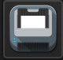
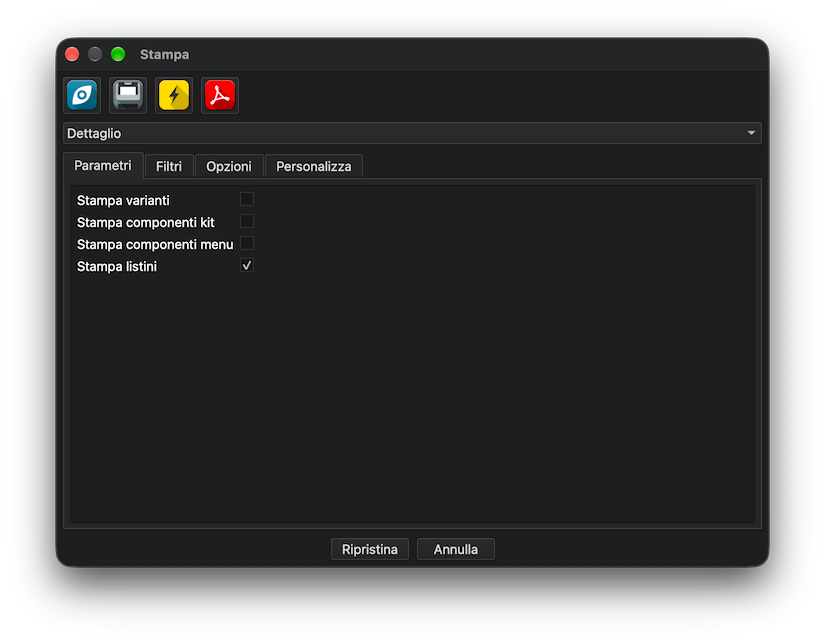
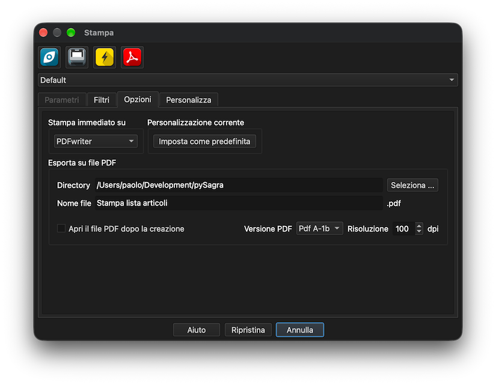
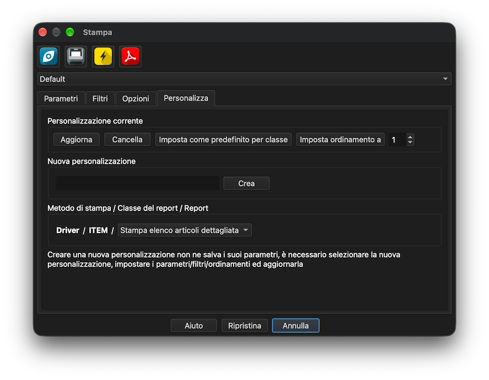

La finestra di stampa è la stessa per tutti i report: archivi, ordini, statistiche.
Le impostazioni di stampa da utilizzare vengono selezionate nella casella presente sotto i pusanti. Nell'esempio Dettaglio è la configurazione di stampa attiva.

Sono presenti quattro pulsanti per lanciare la stampa sui diversi dispositivi.
| Pulsante | Funzione | Note |
|---|---|---|
|
Anteprima di stampa | Visualizza l'anteprima a video della stampa richiesta |
 |
Stampa con richiesta stampante | Stampa il report direttamente su stampante richiedendo il dispositivo da utilizzare |
|
Stampa immediata | Lancia la stampa direttamente sul dispositivo indicato in Opzioni → Stampa immediata su |
|
Esporta su PDF | Crea un file PDF per il report selezionato in base ai parametri presenti in Opzioni → Esporta su file PDF |
La finestra presenta sempre quattro schede:
La scheda Parametri viene disabilitata se il report selezionato non richiede parametri.
La scheda Personalizza è visibile e disponibile solo per gli utenti che possono modificare report.

La scheda consente di impostare i seguenti parametri:

La scheda consente di creare, modificare e cancellare configurazioni di stampa usate di frequente.
Nel riquadro Personalizzazione corrente sono disponibili le seguenti azioni:
Per creare una nuova configurazione di stampa è necessario:
La finestra funziona allo stesso modo sia per report Driver che per report Esc/Pos.